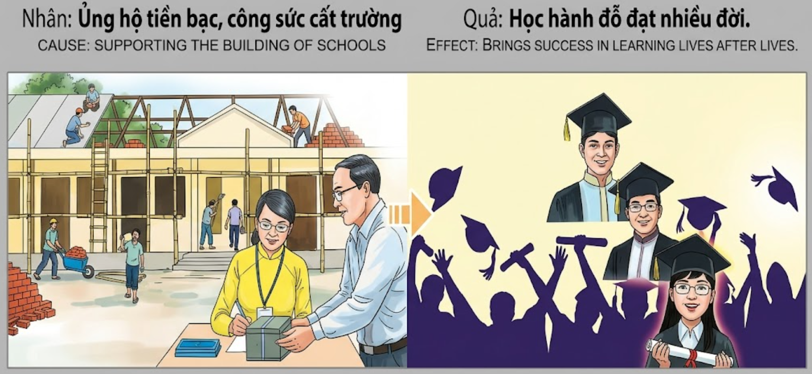

Cimentar la SabiduríaFoundation of WisdomFondamenta della Sapienza智慧的基石تأسيس الحكمةФундамент мудростиFundament der WeisheitFondation de la sagesse知恵の基盤Cimentar a SabedoriaGieo Mầm Trí Tuệ
Quien contribuye con su esfuerzo o riqueza a la construcción de lugares de enseñanza, abre las puertas de su propio entendimiento y garantiza para sí mismo y su descendencia el éxito en el aprendizaje vida tras vida.He who contributes with his effort or wealth to the construction of places of teaching, opens the doors of his own understanding and guarantees for himself and his descendants success in learning life after life.Chi contribuisce con il proprio impegno o ricchezza alla costruzione di luoghi di insegnamento, apre le porte della propria comprensione e garantisce a sé e ai propri discendenti il successo nell'apprendimento vita dopo vita.以心力或财力资助校舍建设者，开启了自身智慧之门，并为自己及后代开启了世世的学习成功之路。من يساهم بجهده أو ماله في بناء أماكن التعليم، يفتح أبواب فهمه الخاص ويضمن لنفسه ولذريته النجاح في التعلم حياة تلو الأخرى.Тот, кто своим трудом или богатством способствует строительству мест обучения, открывает двери собственного понимания и гарантирует себе и своим потомкам успех в обучении из жизни в жизнь.Wer mit seinem Einsatz oder seinem Vermögen zum Bau von Bildungsstätten beiträgt, öffnet die Türen seines eigenen Verständnisses und garantiert sich und seinen Nachkommen Erfolg beim Lernen, Leben für Leben.Celui qui contribue par son effort ou sa richesse à la construction de lieux d'enseignement ouvre les portes de sa propre compréhension et garantit pour lui-même et sa descendance le succès dans l'apprentissage vie après vie.自らの努力や富をもって教育の場の建設に貢献する者は、自らの理解の扉を開き、自らと子孫のために世々代々にわたる学習の成功を保証します。Aquele que contribui com o seu esforço ou riqueza para a construção de locais de ensino, abre as portas da sua própria compreensão e garante para si e para os seus descendentes o sucesso na aprendizagem vida após vida.Kẻ nào đóng góp công sức hoặc tiền của để xây dựng trường học, kẻ đó đang tự mở ra cánh cửa hiểu biết cho chính mình và đảm bảo cho bản thân cùng hậu duệ sự thành đạt trong học vấn suốt nhiều kiếp sống.
La educación es la luz que disipa las sombras de la ignorancia, y el lugar donde se imparte es un templo sagrado del intelecto. Participar en la creación de una escuela no es solo levantar paredes de ladrillo o madera, sino establecer un faro que guiará a las almas jóvenes hacia la claridad. Cada moneda donada y cada hora de trabajo invertida en este propósito se convierte en un crédito kármico de valor incalculable.
El universo registra el deseo de ver a otros progresar a través del conocimiento. Al facilitar que otros aprendan, estamos sembrando las condiciones para que nuestro propio cerebro sea agudo, nuestra memoria fiel y nuestro juicio equilibrado en futuras encarnaciones. La inteligencia no es un don aleatorio, sino el fruto de haber valorado y protegido la sabiduría en el pasado.
Aquellos que apoyan la enseñanza nunca conocerán la oscuridad de la confusión mental. En sus futuros retornos, la excelencia académica será su compañera constante. Encontrarán maestros inspiradores y recursos abundantes, y sus mentes estarán preparadas para absorber las verdades más profundas con facilidad. Quien ayuda a construir una escuela en la tierra, construye una biblioteca infinita en su propia conciencia eterna.
Education is the light that dissipates the shadows of ignorance, and the place where it is taught is a sacred temple of the intellect. Participating in the creation of a school is not just raising brick or wooden walls, but establishing a lighthouse that will guide young souls toward clarity. Every coin donated and every hour of work invested in this purpose becomes a karmic credit of incalculable value.
The universe records the desire to see others progress through knowledge. By facilitating others to learn, we are sowing the conditions for our own brain to be sharp, our memory faithful, and our judgment balanced in future incarnations. Intelligence is not a random gift, but the fruit of having valued and protected wisdom in the past.
Those who support teaching will never know the darkness of mental confusion. In their future returns, academic excellence will be their constant companion. They will find inspiring teachers and abundant resources, and their minds will be prepared to absorb the deepest truths with ease. He who helps build a school on earth builds an infinite library in his own eternal consciousness.
L'istruzione è la luce que dissipa le ombre dell'ignoranza, e il luogo in cui si insegna è un tempio sacro dell'intelletto. Partecipare alla creazione di una scuola non è solo innalzare mura di mattoni o di legno, ma stabilire un faro que guiderà le anime giovani verso la chiarezza. Ogni moneta donata e ogni ora di lavoro investita in questo scopo diventa un credito karmico di valore incalcolabile.
L'universo registra il desiderio di vedere gli altri progredire attraverso la conoscenza. Facilitando l'apprendimento degli altri, stiamo seminando le condizioni affinché il nostro cervello sia acuto, la nostra memoria fedele e il nostro giudizio equilibrato nelle future incarnazioni. L'intelligenza non è un dono casuale, ma il frutto dell'aver valorizzato e protetto la saggezza nel passato.
Coloro que sostengono l'insegnamento non conosceranno mai l'oscurità della confusione mentale. Nei loro futuri ritorni, l'eccellenza accademica sarà la loro costante compagna. Troveranno insegnanti ispiratori e risorse abbondanti, e le loro menti saranno preparate per assorbire con facilità le verità più profonde. Chi aiuta a costruire una scuola sulla terra, costruisce una biblioteca infinita nella propria coscienza eterna.
教育是驱散无知阴影的光芒，而教学场所则是神圣的智力殿堂。参与创建一所学校不仅仅是建造砖墙或木墙，而是建立一座指引年轻灵魂走向清晰的灯塔。为此目的捐赠的每一枚硬币和投入的每一小时劳动，都成为了具有不可估量价值的业力信用。
宇宙记录了看到他人通过知识进步的愿望。通过促进他人的学习，我们正在播种在未来的化身中让我们的大脑敏锐、记忆忠实、判断平衡的条件。智力不是随机的天赋，而是过去珍惜和保护智慧的果实。
那些支持教学的人永远不会知道精神混乱的黑暗。在他们未来的回归中，学术卓越将是他们不断的伙伴。他们将找到鼓舞人心的老师和丰富的资源，他们的思想将准备好轻松吸收最深刻的真理。在地球上帮助建造学校的人，在他自己永恒的意识中建造了一座无限的图书馆。
التعليم هو النور الذي يبدد ظلال الجهل، والمكان الذي يتم فيه التدريس هو معبد مقدس للعقل. المشاركة في إنشاء مدرسة ليست مجرد رفع جدران من الطوب أو الخشب، بل هي إقامة منارة ستوجه الأرواح الشابة نحو الوضوح. كل عملة يتم التبرع بها وكل ساعة عمل تُستثمر في هذا الغرض تصبح رصيداً كارمياً ذا قيمة لا تقدر.
يسجل الكون الرغبة في رؤية الآخرين يتقدمون من خلال المعرفة. من خلال تسهيل تعلم الآخرين، نحن نزرع الظروف ليصبح دماغنا حاداً، وذاكرتنا وفية، وحكمنا متوازناً في التجسيدات المستقبلية. الذكاء ليس عطاءً عشوائياً، بل هو ثمرة لتقدير الحكمة وحمايتها في الماضي.
أولئك الذين يدعمون التدريس لن يعرفوا أبداً ظلام الارتباك العقلي. في عودتهم المستقبلية، سيكون التميز الأكاديمي رفيقهم الدائم. سيجدون معلمين ملهمين وموارد وفيرة، وستكون عقولهم مستعدة لامتصاص أعمق الحقائق بسهولة. من يساعد في بناء مدرسة على الأرض، يبني مكتبة لا نهائية في وعيه الأبدي.
Образование — это свет, рассеивающий тени невежества, а место, где оно преподается, — это священный храм интеллекта. Участие в создании школы — это не просто возведение кирпичных или деревянных стен, а создание маяка, который будет направлять молодые души к ясности. Каждая пожертвованная монета и каждый час труда, вложенный в это дело, становятся кармическим кредитом неоценимой стоимости.
Вселенная фиксирует желание видеть прогресс других через знания. Содействуя обучению других, мы создаем условия для того, чтобы в будущих воплощениях наш собственный мозг был острым, память — верной, а суждения — взвешенными. Интеллект — это не случайный дар, а плод того, что в прошлом мы ценили и оберегали мудрость.
Те, кто поддерживает обучение, никогда не познают тьму ментальной путаницы. В их будущих возвращениях академические успехи будут их постоянными спутниками. Они найдут вдохновляющих учителей и богатые ресурсы, а их умы будут готовы с легкостью воспринимать самые глубокие истины. Тот, кто помогает построить школу на земле, строит бесконечную библиотеку в своем собственном вечном сознании.
Bildung ist das Licht, das die Schatten der Unwissenheit vertreibt, und der Ort, an dem sie gelehrt wird, ist ein heiliger Tempel des Geistes. Die Beteiligung an der Gründung einer Schule bedeutet nicht nur das Errichten von Mauern aus Ziegeln oder Holz, sondern das Errichten eines Leuchtturms, der junge Seelen zur Klarheit führt. Jede gespendete Münze und jede Arbeitsstunde, die in diesen Zweck investiert wird, wird zu einem karmischen Guthaben von unschätzbarem Wert.
Das Universum zeichnet den Wunsch auf, andere durch Wissen vorankommen zu sehen. Indem wir anderen das Lernen ermöglichen, säen wir die Bedingungen dafür, dass unser eigenes Gehirn geschärft, unser Gedächtnis treu und unser Urteilsvermögen in zukünftigen Inkarnationen ausgewogen ist. Intelligenz ist kein zufälliges Geschenk, sondern die Frucht davon, dass man Weisheit in der Vergangenheit geschätzt und geschützt hat.
Diejenigen, die das Lehren unterstützen, werden niemals die Dunkelheit geistiger Verwirrung kennen. In ihren zukünftigen Rückkehren wird akademische Exzellenz ihr ständiger Begleiter sein. Sie werden inspirierende Lehrer und reichlich Ressourcen finden, und ihr Verstand wird bereit sein, die tiefsten Wahrheiten mit Leichtigkeit aufzunehmen. Wer hilft, eine Schule auf der Erde zu bauen, baut eine unendliche Bibliothek in seinem eigenen ewigen Bewusstsein.
L'éducation est la lumière qui dissipe les ombres de l'ignorance, et le lieu où elle est enseignée est un temple sacré de l'intellect. Participer à la création d'une école ne consiste pas seulement à ériger des murs de briques ou de bois, mais à établir un phare qui guidera les jeunes âmes vers la clarté. Chaque pièce donnée et chaque heure de travail investie dans ce but devient un crédit karmique d'une valeur inestimable.
L'univers enregistre le désir de voir les autres progresser grâce à la connaissance. En facilitant l'apprentissage des autres, nous semons les conditions pour que notre propre cerveau soit aiguisé, notre mémoire fidèle et notre jugement équilibré dans nos futures incarnations. L'intelligence n'est pas un don aléatoire, mais le fruit d'avoir valorisé et protégé la sagesse dans le passé.
Ceux qui soutiennent l'enseignement ne connaîtront jamais l'obscurité de la confusion mentale. Dans leurs futurs retours, l'excellence académique sera leur compagne constante. Ils trouveront des enseignants inspirants et des ressources abondantes, et leurs esprits seront préparés à absorber les vérités les plus profondes avec facilité. Celui qui aide à construire une école sur terre construit une bibliothèque infinie dans sa propre conscience éternelle.
教育は無知の影を追い払う光であり、それが教えられる場所は知性の聖なる神殿です。学校の創設に参加することは、単にレンガや木材の壁を築くことではなく、若い魂を明晰さへと導く灯台を立てることなのです。この目的のために寄付されたすべての金貨と投資されたすべての労働時間は、計り知れない価値のあるカルマの功徳となります。
宇宙は、知識を通じて他人が進歩するのを見たいという願いを記録しています。他人が学ぶのを助けることで、私たちは将来の化身において自分自身の脳が鋭くなり、記憶が正確になり、判断がバランスの取れたものになるための条件をまいています。知性は偶然の贈り物ではなく、過去に知恵を尊び、守ってきたことの結果なのです。
教育を支援する者が、頭の混乱という暗闇を知ることはありません。将来の転生において、学問の卓越性は常に彼らの伴侶となるでしょう。彼らはインスピレーションを与える教師と豊かな資源に出会い、その心は最も深い真実を容易に吸収できる準備が整っているでしょう。地上に学校を建てるのを助ける者は、自身の永遠の意識の中に無限の図書館を建てるのです。
A educação é a luz que dissipa as sombras da ignorância, e o local onde é ministrada é um templo sagrado do intelecto. Participar na criação de uma escola não é apenas levantar paredes de tijolo ou madeira, mas estabelecer um farol que guiará as almas jovens em direcção à clareza. Cada moeda doada e cada hora de trabalho investida neste propósito torna-se um crédito cármico de valor incalculável.
O universo regista o desejo de ver os outros progredir através do conhecimento. Ao facilitar o aprendizado de outrem, estamos a semear as condições para que o nosso próprio cérebro seja aguçado, a nossa memória fiel e o nosso julgamento equilibrado em futuras encarnações. A inteligência não é um dom aleatório, mas o fruto de ter valorizado e protegido a sabedoria no pasado.
Aqueles que apoiam o ensino nunca conhecerão a escuridão da confusão mental. Nos seus futuros regressos, a excelência académica será a sua companheira constante. Encontrarão professores inspiradores e recursos abundantes, e as suas mentes estarão preparadas para absorver as verdades mais profundas com facilidade. Quem ajuda a construir uma escola na terra, constrói uma biblioteca infinita na sua própria consciência eterna.
Giáo dục là ánh sáng xua tan bóng tối của sự vô minh, và nơi dạy học chính là ngôi đền thiêng liêng của trí tuệ. Tham gia vào việc xây dựng một ngôi trường không chỉ là dựng lên những bức tường gạch hay gỗ, mà là thiết lập một ngọn hải đăng dẫn dắt những tâm hồn trẻ thơ hướng về sự sáng suốt. Mỗi đồng tiền đóng góp và mỗi giờ lao động đầu tư vào mục đích này đều trở thành một khoản phúc đức vô giá.
Vũ trụ ghi nhận tâm ý mong muốn thấy người khác tiến bộ thông qua tri thức. Khi chúng ta tạo điều kiện cho người khác học tập, chúng ta đang gieo mầm cho chính bộ não mình trở nên nhạy bén, trí nhớ kiên định và phán đoán sáng suốt trong những kiếp sống tương lai. Trí thông minh không phải là một món quà ngẫu nhiên, mà là hoa trái của việc đã từng trân trọng và bảo vệ sự hiểu biết trong quá khứ.
Những ai ủng hộ sự học sẽ không bao giờ phải nếm trải bóng tối của sự u mê hay nhầm lẫn. Trong những kiếp sau, sự ưu tú về học vấn sẽ là người bạn đồng hành không rời. Họ sẽ gặp được những bậc thầy truyền cảm hứng và nguồn học liệu dồi dào, tâm trí họ sẽ luôn sẵn sàng để tiếp thu những chân lý sâu sắc nhất một cách dễ dàng. Kẻ nào giúp xây trường dưới hạ giới là đang tự xây cho mình một thư viện vô tận trong chính tâm thức vĩnh cửu của mình.
El Mecenas de la Aldea de las Palmeras
The Patron of Palm Village
Il Mecenate del Villaggio delle Palme
棕榈村的支持者
راعي قرية النخيل
Покровитель Пальмовой деревни
Der Gönner des Palmendorfes
Le mécène du village des palmiers
パーム村のパトロン
O Mecenas da Aldeia das Palmeiras
Vị Mạnh Thường Quân Của Làng Cọ
En una apartada región de Vietnam, una mujer llamada Linh veía con tristeza cómo los niños de su aldea debían caminar kilómetros para aprender a leer bajo un árbol. Linh no era rica, pero poseía una pequeña parcela de tierra fértil. Decidió donarla íntegramente para construir la primera escuela de ladrillo. No solo dio la tierra, sino que trabajó junto a los constructores, llevando agua y organizando comedores para los obreros.
Cuando la escuela se inauguró, Linh ya era anciana. Al ver a la primera generación graduarse, sintió una satisfacción que ninguna riqueza material le habría dado. Al morir, su transición fue como un sueño lúcido. Renació en una familia de académicos en una gran ciudad. Desde los cinco años, Linh (ahora llamada Mai) mostraba una capacidad de comprensión asombrosa. Los libros que otros tardaban meses en entender, ella los asimilaba en días.
Mai se convirtió en una científica renombrada, pero su verdadera genialidad residía en que nunca tenía que esforzarse por aprender; el conocimiento fluía hacia ella como si ya estuviera allí. Un día, visitando la antigua aldea de sus antepasados, encontró una pequeña placa en una escuela vieja que decía: 'Donada por Linh'. Al tocarla, Mai sintió un escalofrío de reconocimiento. Entendió que su brillante mente actual no era un accidente, sino el eco de los ladrillos que una vez ayudó a colocar.
In a remote region of Vietnam, a woman named Linh watched with sadness as the children of her village had to walk miles to learn to read under a tree. Linh was not rich, but she owned a small plot of fertile land. She decided to donate it entirely to build the first brick school. She not only gave the land but worked alongside the builders, carrying water and organizing canteens for the workers.
When the school opened, Linh was already an old woman. Seeing the first generation graduate, she felt a satisfaction that no material wealth would have given her. Upon dying, her transition was like a lucid dream. She was reborn into a family of academics in a large city. From the age of five, Linh (now called Mai) showed an amazing capacity for understanding. The books that others took months to understand, she assimilated in days.
Mai became a renowned scientist, but her true genius lay in the fact that she never had to struggle to learn; knowledge flowed to her as if it were already there. One day, visiting the ancient village of her ancestors, she found a small plaque on an old school that said: 'Donated by Linh'. Upon touching it, Mai felt a shiver of recognition. She understood that her current brilliant mind was not an accident, but the echo of the bricks she once helped to lay.
In una regione remota del Vietnam, una donna di nome Linh guardava con tristezza come i bambini del suo villaggio dovevano camminare per chilometri per imparare a leggere sotto un albero. Linh non era ricca, ma possedeva un piccolo appezzamento di terra fertile. Decise di donarlo interamente per costruire la prima scuola di mattoni. Non solo diede la terra, ma lavorò insieme ai costruttori, portando acqua e organizzando mense per gli operai.
Quando la scuola fu inaugurata, Linh era già un'anziana donna. Vedendo la prima generazione diplomarsi, provò una soddisfazione que nessuna ricchezza materiale le avrebbe dato. Morendo, la sua transizione fu come un sogno lucido. Rinacque in una famiglia di accademici in una grande città. Dall'età di cinque anni, Linh (ora chiamata Mai) mostrava una sorprendente capacità di comprensione. I libri que altri impiegavano mesi per capire, lei li assimilava in pochi giorni.
Mai divenne una scienziata rinomata, ma il suo vero genio risiedeva nel fatto que non doveva mai sforzarsi di imparare; la conoscenza fluiva verso di lei come se fosse già lì. Un giorno, visitando l'antico villaggio dei suoi antenati, trovò una piccola targa su una vecchia scuola que diceva: 'Donata da Linh'. Toccandola, Mai sentì un brivido di riconoscimento. Capì que la sua attuale mente brillante non era un incidente, ma l'eco dei mattoni que un tempo aveva contribuito a posare.
在越南一个偏远地区，一位名叫 Linh 的女性悲伤地看着村里的孩子们不得不走好几英里的路去一棵树下读书。Linh 并不富有，但她拥有一小块肥沃的土地。她决定将其全部捐出，建造第一所砖瓦学校。她不仅捐出了土地，还与建筑工人一起工作，为工人们提水送饭。
学校开学时，Linh 已经是个老妇人了。看到第一届毕业生，她感到一种任何物质财富都无法给予她的满足感。去世时，她的过渡就像一场清醒的梦。她重生在大城市的一个学术世家。从五岁起，Linh（现在叫 Mai）就表现出了惊人的理解能力。别人要花几个月才能读懂的书，她几天就能吸收。
Mai 成为了一名著名的科学家，但她真正的天才之处在于她从未费力学习；知识自然而然地流向她，就好像它已经在那里了一样。一天，在参观祖先居住的古老村庄时，她在一所旧学校里发现了一块小牌子，上面写着：“由 Linh 捐赠”。触摸它时，Mai 感到一阵相认的战栗。她明白，她现在的捷才并非偶然，而是她曾经参与铺设的那些砖块的回响。
في منطقة نائية من فيتنام، كانت امرأة تدعى لينه تراقب بحزن كيف يضطر أطفال قريتها إلى المشي أميالاً ليتعلموا القراءة تحت شجرة. لم تكن لينه غنية، لكنها كانت تمتلك قطعة أرض صغيرة خصبة. قررت التبرع بها بالكامل لبناء أول مدرسة من الطوب. لم تكتفِ بمنح الأرض فحسب، بل عملت جنباً إلى جنب مع البنائين، فكانت تحمل الماء وتنظم المقاصف للعمال.
عندما افتُتحت المدرسة، كانت لينه بالفعل امرأة مسنة. وعند رؤية أول جيل يتخرج، شعرت برضا لم تكن لتمنحه إياها أي ثروة مادية. عند وفاتها، كان انتقالها مثل حلم واعٍ. ولدت من جديد في عائلة من الأكاديميين في مدينة كبيرة. من سن الخامسة، أظهرت لينه (التي تُدعى الآن ماي) قدرة مذهلة على الفهم. الكتب التي يستغرق الآخرون شهوراً لفهمها، كانت هي تستوعبها في أيام.
أصبحت ماي عالمة مشهورة، لكن عبقريتها الحقيقية تكمن في أنها لم تضطر أبداً إلى الكفاح من أجل التعلم؛ كانت المعرفة تتدفق إليها وكأنها موجودة بالفعل. ذات يوم، وأثناء زيارة قرية أجدادها القديمة، وجدت لوحة صغيرة في مدرسة قديمة مكتوب عليها: 'تبرعت بها لينه'. عند لمسها، شعرت ماي برعشة من الإدراك. أدركت أن عقلها اللامع الحالي لم يكن صدفة، بل هو صدى لبنات الطوب التي ساعدت يوماً في وضعها.
В отдаленном регионе Вьетнама женщина по имени Линь с грустью наблюдала за тем, как детям ее деревни приходится проходить многие мили, чтобы научиться читать под деревом. Линь не была богата, но у нее был небольшой участок плодородной земли. Она решила полностью пожертвовать его для строительства первой кирпичной школы. Она не только отдала землю, но и работала вместе со строителями, поднося воду и организуя питание для рабочих.
Когда школа открылась, Линь была уже пожилой женщиной. Видя выпускников первого поколения, она почувствовала удовлетворение, которое не дало бы ей никакое материальное богатство. После смерти ее переход был подобен осознанному сновидению. Она возродилась в семье ученых в большом городе. С пятилетнего возраста Линь (теперь ее звали Май) проявляла удивительную способность к пониманию. Книги, на понимание которых у других уходили месяцы, она усваивала за считанные дни.
Май стала известным ученым, но ее истинный гений заключался в том, что ей никогда не приходилось прилагать усилий для учебы; знания текли к ней так, словно они уже были там. Однажды, посетив старую деревню своих предков, она нашла небольшую табличку на старой школе с надписью: «Пожертвовано Линь». Коснувшись ее, Май почувствовала дрожь узнавания. Она поняла, что ее нынешний блестящий ум не был случайностью — это было эхо тех кирпичей, которые она когда-то помогала закладывать.
In einer abgelegenen Region Vietnams sah eine Frau namens Linh mit Trauer, wie die Kinder ihres Dorfes kilometerweit laufen mussten, um unter einem Baum lesen zu lernen. Linh war nicht reich, aber sie besaß ein kleines Stück fruchtbares Land. Sie beschloss, es vollständig zu spenden, um die erste gemauerte Schule zu bauen. Sie gab nicht nur das Land, sondern arbeitete an der Seite der Bauleute, trug Wasser und organisierte Verpflegung für die Arbeiter.
Als die Schule eröffnet wurde, war Linh bereits eine alte Frau. Als sie die erste Generation ihren Abschluss machen sah, empfand sie eine Genugtuung, die ihr kein materieller Reichtum hätte geben können. Als sie starb, war ihr Übergang wie ein luzider Traum. Sie wurde in einer Akademikerfamilie in einer Großstadt wiedergeboren. Ab dem Alter von fünf Jahren zeigte Linh (jetzt Mai genannt) eine erstaunliche Auffassungsgabe. Bücher, für deren Verständnis andere Monate brauchten, nahm sie in Tagen auf.
Mai wurde eine renommierte Wissenschaftlerin, aber ihr wahres Genie lag darin, dass sie sich nie anstrengen musste, um zu lernen; das Wissen floss ihr zu, als wäre es bereits da. Eines Tages, als sie das alte Dorf ihrer Vorfahren besuchte, fand sie eine kleine Plakette an einer alten Schule, auf der stand: 'Gespendet von Linh'. Als sie sie berührte, spürte Mai einen Schauer der Erkenntnis. Sie verstand, dass ihr heutiger brillanter Verstand kein Zufall war, sondern das Echo der Ziegelsteine, die sie einst mit aufgeschichtet hatte.
Dans une région reculée du Vietnam, une femme nommée Linh voyait avec tristesse les enfants de son village devoir marcher des kilomètres pour apprendre à lire sous un arbre. Linh n'était pas riche, mais elle possédait une petite parcelle de terre fertile. Elle décida d'en faire don intégralement pour construire la première école en briques. Non seulement elle donna le terrain, mais elle travailla aux côtés des bâtisseurs, apportant de l'eau et organisant des cantines pour les ouvriers.
Lorsque l'école fut inaugurée, Linh était déjà une vieille femme. En voyant la première génération obtenir son diplôme, elle ressentit une satisfaction qu'aucune richesse matérielle ne lui aurait procurée. En mourant, sa transition fut comme un rêve lucide. Elle renaquit dans une famille d'universitaires dans une grande ville. Dès l'âge de cinq ans, Linh (désormais appelée Mai) fit preuve d'une étonnante capacité de compréhension. Les livres que les autres mettaient des mois à comprendre, elle les assimilait en quelques jours.
Mai devint une scientifique renommée, mais son véritable génie résidait dans le fait qu'elle n'avait jamais à faire d'effort pour apprendre ; le savoir coulait vers elle comme s'il était déjà là. Un jour, en visitant l'ancien village de ses ancêtres, elle trouva une petite plaque sur une vieille école qui disait : « Don de Linh ». En la touchant, Mai ressentit un frisson de reconnaissance. Elle comprit que son esprit brillant actuel n'était pas un accident, mais l'écho des briques qu'elle avait jadis aidé a poser.
ベトナムの人里離れた地域で、リンという名の女性は、村の子供たちが木の下で読み書きを学ぶために何キロも歩かなければならないのを悲しみとともに見守っていました。リンは金持ちではありませんでしたが、肥沃な小さな土地を所有していました。彼女は、最初のレンガ造りの学校を建てるために、その土地をすべて寄付することに決めました。土地を提供しただけでなく、建築家たちと一緒に働き、水を運び、労働者のために炊き出しを行いました。
学校が開校したとき、リンはすでに老齢でした。最初の世代が卒業するのを見て、彼女はいかなる物質的な富も与えることのできない満足感を感じました。亡くなったとき、彼女の転生は明晰夢のようでした。大都市の学者一家に生まれ変わったのです。5歳のころから、リン（現在はマイと呼ばれています）は驚くべき理解力を示しました。他の人が理解するのに数ヶ月かかる本を、彼女は数日で吸収してしまいました。
マイは著名な科学者になりましたが、彼女の真の天才性は、学ぶために努力する必要がまったくないという点にありました。知識は、まるですでにそこにあるかのように彼女の中に流れ込んできたのです。ある日、先祖の古い村を訪れた際、古い学校に「リンによる寄付」と書かれた小さな盾を見つけました。それに触れたとき、マイは reconocimientos（再認識）の震えを感じました。現在の自分の輝かしい知性は偶然ではなく、かつて自ら積むのを助けたレンガの残響であることを理解したのです。
Numa região remota do Vietname, uma mulher chamada Linh via com tristeza como as crianças da sua aldeia tinham de caminhar quilómetros para aprender a ler debaixo de uma árvore. Linh não era rica, mas possuía uma pequena parcela de terra fértil. Decidiu doá-la integralmente para construir a primeira escola de tijolo. Não só deu a terra, mas trabalhou ao lado dos construtores, levando água e organizando refeitórios para os operários.
Quando a escola se inaugurou, Linh já era uma mulher idosa. Ao ver a primeira geração licenciar-se, sentiu uma satisfação que nenhuma riqueza material lhe teria dado. Ao morrer, a sua transição foi como um sonho lúcido. Renasceu numa família de académicos numa grande cidade. Desde os cinco anos, Linh (agora chamada Mai) mostrava uma capacidade de compreensão assombrosa. Os livros que outros tardavam meses a entender, ela assimilava-os em dias.
Mai tornou-se uma cientista de renome, mas a sua verdadeira genialidade residia no facto de nunca ter de se esforçar por aprender; o conhecimento fluía para ela como se já lá estivesse. Um dia, visitando a antiga aldeia dos seus antepassados, encontrou uma pequena placa numa escola velha que dizia: 'Doada por Linh'. Ao tocar-lhe, Mai sentiu um calafrio de reconhecimento. Entendeu que a sua brilhante mente actual não era um acidente, mas o eco dos tijolos que outrora ajudou a colocar.
Tại một vùng quê hẻo lánh của Việt Nam, có một người phụ nữ tên là Linh, bà luôn cảm thấy buồn lòng khi chứng kiến những đứa trẻ trong làng phải đi bộ hàng cây số để học chữ dưới gốc cây. Linh không giàu có, nhưng bà sở hữu một mảnh đất nhỏ màu mỡ. Bà quyết định hiến toàn bộ mảnh đất đó để xây dựng ngôi trường gạch đầu tiên của làng. Không chỉ hiến đất, bà còn trực tiếp làm việc cùng những người thợ xây, gánh nước và tổ chức nấu ăn cho họ.
Khi ngôi trường khánh thành, Linh đã là một bà lão. Nhìn thế hệ học trò đầu tiên tốt nghiệp, bà cảm thấy một sự mãn nguyện mà không thứ của cải vật chất nào có thể sánh được. Khi qua đời, sự chuyển kiếp của bà diễn ra như một giấc mơ tỉnh táo. Bà tái sinh vào một gia đình trí thức tại một thành phố lớn. Từ năm 5 tuổi, Linh (nay tên là Mai) đã bộc lộ khả năng hiểu biết đáng kinh ngạc. Những cuốn sách mà người khác mất hàng tháng để hiểu, cô chỉ cần vài ngày là nắm vững.
Mai trở thành một nhà khoa học lừng danh, nhưng thiên tư thực sự của cô nằm ở chỗ cô không bao giờ phải gồng mình để học; tri thức tự tìm đến với cô như thể nó đã có sẵn ở đó từ trước. Một ngày nọ, khi về thăm ngôi làng cổ của tổ tiên, cô tìm thấy một tấm bảng nhỏ trong một ngôi trường cũ có ghi: 'Do bà Linh hiến tặng'. Khi chạm vào tấm bảng, Mai cảm thấy một luồng điện nhận biết chạy dọc sống lưng. Cô hiểu rằng trí tuệ rạng ngời của mình hiện tại không phải là ngẫu nhiên, mà là tiếng vang của những viên gạch mà cô đã từng góp sức đặt xuống năm xưa.
La Inspiración Original
The Original Inspiration
Nguồn cảm hứng ban đầu
L'ispirazione originale
最初的灵感
الإلهام الأصلي
Оригинальное вдохновение
Die ursprüngliche Inspiration
L'inspiration originale
オリジナルのインスピレーション
A ispirazione originale
La historia que hemos relatado en este capítulo está inspirada por el pasaje de la escena original de los murales «Tranh Nhân Quả» (Ilustraciones del Karma) del Templo Linh Ung en Da Nang, capturado en la imagen.
The story we have told in this chapter is inspired by the passage from the original scene of the “Tranh Nhân Quả” (Illustrations of Karma) murals of the Linh Ung Temple in Da Nang, captured in the image.
Câu chuyện chúng tôi kể trong chương này được lấy cảm hứng từ đoạn trích từ cảnh gốc của bức tranh tường “Tranh Nhân Quả” ở chùa Linh Ứng ở Đà Nẵng, được ghi lại trong hình ảnh.
La storia que abbiamo raccontato in questo capitolo è ispirata al passaggio della scena originale dei murali “Tranh Nhân Quả” (Ilustrazioni del Karma) del Tempio Linh Ung a Da Nang, catturati nell'immagine.
我们在本章中讲述的故事的灵感来自图像中捕获的岘港灵应寺“Tranh Nhân Quả”（业力插图）壁画的原始场景。
القصة التي رويناها في هذا الفصل مستوحاة من مقطع من المشهد الأصلي لجداريات 'ترانه نهan كو' (الرسوم التوضيحية للكارما) لمعبد لينه أونغ في دا نانغ، الملتقطة في الصورة.
История, которую мы рассказали в этой главе, вдохновлена отрывком из оригинальной сцены фрески «Тран Нхан Ку» («Иллюстрации кармы») храма Линь Унг в Дананге, запечатленной на изображении.
Die Geschichte, die wir in diesem Kapitel erzählt haben, ist inspiriert von der Passage aus der Originalszene der Wandgemälde „Tranh Nhân Quả“ (Illustrationen von Karma) des Linh Ung-Tempels in Da Nang, die im Bild festgehalten ist.
L'histoire que nous avons racontée dans ce chapitre est inspirée du passage de la scène originale des peintures murales « Tranh Nhân Quả » (Illustrations du Karma) du temple Linh Ung à Da Nang, capturées dans l'image.
この章で私たちが語った物語は、ダナンのリンウン寺院の壁画「Tranh Nhân Quả」（カルマの図）の元のシーンの一節からインスピレーションを得て、画像に収められています。
A história que contamos neste capítulo é inspirada na passagem da cena original dos murais “Tranh Nhân Quả” (Ilustrações do Karma) do Templo Linh Ung em Da Nang, capturada na imagem.

Como se puede apreciar en el pasaje extraído del mural, la causa y su efecto kármico están descritos originalmente en vietnamita y con una breve traducción al inglés. A continuación, te ofrecemos su traducción detallada en los distintos idiomas:
As can be seen in the passage taken from the mural, the cause and its karmic effect are originally described in Vietnamese and with a brief translation into English. Below, we offer you its detailed translation in the different languages:
🇻🇳 Tiếng Việt:
Nhân: Ủng hộ tiền bạc, công sức cất trường.
Quả: Học hành đỗ đạt nhiều đời.
🇬🇧 English:
Cause: Supporting the building of schools.
Effect: Brings success in learning lives after lives.
Traducción Recreada:
Causa: Apoyar la construcción de escuelas.
Efecto: Trae éxito en el aprendizaje durante muchas vidas.
Recreated Translation:
Cause: Supporting the building of schools.
Effect: Brings success in learning lives after lives.
Traduzione ricreata:
Causa: Sostenere la costruzione di scuole.
Effetto: Porta successo nello studio per molte vite.
重新创建的翻译:
起因：支持建设学校。
结果：世世学业有成。
الترجمة المعاد صياغتها:
السبب: دعم بناء المدارس.
الأثر: يجلب النجاح في التعلم لعدة حيوات.
Воссозданный перевод:
Причина: Поддержка строительства школ.
Следствие: Приносит успех в обучении на многие жизни вперед.
Neu erstellte Übersetzung:
Ursache: Den Bau von Schulen unterstützen.
Wirkung: Bringt Erfolg beim Lernen über viele Leben hinweg.
Traduction recréée:
Cause : Soutenir la construction d'écoles.
Effet : Apporte du succès dans l'apprentissage vie après vie.
再作成された翻訳:
原因：学校の建設を支援すること。
影響：何代にもわたって学習の成功をもたらす。
Tradução recriada:
Causa: Apoiar a construção de escolas.
Efeito: Traz sucesso na aprendizagem durante muitas vidas.